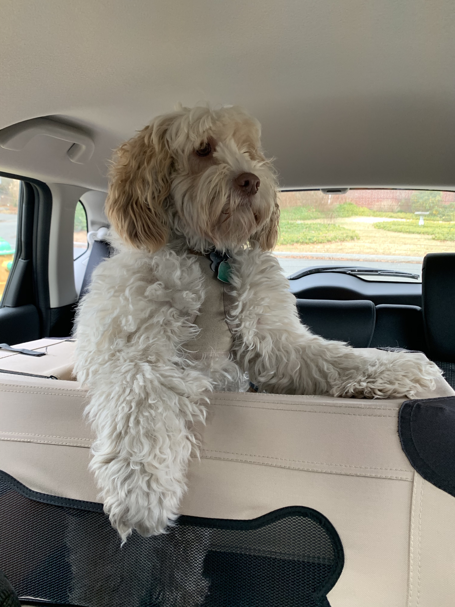

I have always wanted to do graphic design and learn more about design in general. My mom is also a graphic designer.
What are you most inspired by?
I really love art that creates a conversation about something going on socially. There is a lot of inspiring things happening now in many art forms that are starting a conversation beyond the museum or performance space.
What has been your favorite class so far? Why?
core type studio, I really love typography and the projects I got to make. One of the projects was a zine/poster series called "How To Win the 2020 Election" which I am selling at Printed Matter!
What are you hoping to learn in this class?
I want to enhance my coding skills and make design interactive
What do you like to do in your spare time?
I love watching films, seeing theater and hanging with friends.
When you imagine a graphic designer, what do you think they do on a day to day?
I think they design a lot of things of all sizes. Some stuff they can finish in one day and some projects can last weeks or months.
When you imagine a developer, what do you think they do on a day to day?
Program the code for websites, the more user friendly and in depth the website is, the more coding and time goes into it.
Where do you see yourself after graduating? What kind of job do you want to have?
I'd love to do graphic design/marketing for theater+film. I am currently the graphic design intern at Atlantic Theater Company !
Do you consider yourself an artist, a designer, both, or neither?
Designer, I like to make conceptual art sometimes but have always found myself more of a designer.
What kind of design classes have you taken before this one?
All of the classes so far at Parsons, a few classes at my high school and I took graphic design in the pre college summer program here!
Do you know most of the students in our class already?
Not really
List your favorite typefaces.
Akzidenz Grotesk
Franklin Gothic
What are you top 3 favorite colors?
turqoise, green, magenta
Which artists do you like?
David Hockney, Work from the Bauhaus, Paula Scher, Nan Goldin (Both her personal work and the group she started Sackler P.A.I.N.), David Wojnarowicz, Keith Haring
List out some music that you like to listen to
Alvvays, Duncan Sheik, Alanis Morisette, Courtney Barnett, Samia The Band, Unknown Mortal Orchestra, Sufjan Stevens
Did anything interesting happen over winter break?
I went to The Netherlands for about a week!
Have you ever built a website?
I have a website on squarespace, but thats about it.
Do you have any questions for me?
I will soon
What is your first memory of using the internet?
Probably when I got webkinz when I wanna say I was 6/div>
Do you have a favorite place to visit?
I love going to California or Cape Cod, I have family in both areas. I also love the West Village.
Do you speak any other languages?
I used to speak some Hebrew but not anymore
What is your favorite food?
I love dark chocolate
What is your favorite animal?
Dogs!
Do you have a pet?

Is there any other information you’d like me to know?